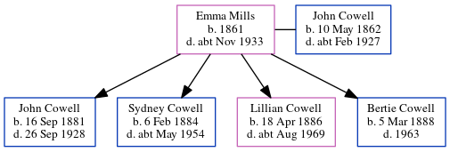

Emma Elizabeth Cowell (née Mills) 1861 - c1933
[ Home ] | [ Calendar ] | [ Surnames Index ] | [ Census Index ] | [ Family History ]Emma Mills, the wife of John Charles Cowell (the second cousin three-times-removed on the mother's side of Nigel Horne), was born in Chatham, Kent, England in 18611,2 and married John (a police constable with whom she had 4 children: John Francis, Sydney James Henry, Lillian Eleanor and Bertie Charles) in Chatham on May 9, 18814.
During her life, she was living at 71 Victoria Road, Willesden, London, England on Apr 5, 18911; and at 28 Claremont Road, Kilburn, London on Mar 31, 19012, on Apr 2, 19115 and on Jun 19, 19216.
She died c. Nov 1933 in Willesden3.
Children
- John Francis was born on Sep 16, 1881
- Sydney James Henry was born on Feb 6, 1884
- Lillian Eleanor was born on Apr 18, 1886
- Bertie Charles was born on Mar 5, 1888
Citations
- 1891 England, Wales & Scotland Census - Findmypast (was age 30 and the wife of the head of the household)
- 1901 England, Wales & Scotland Census - Findmypast (was age 40 and the wife of the head of the household)
- England & Wales deaths 1837-2007 - Findmypast
- England & Wales marriages 1837-2008 - Findmypast
- 1911 Census for England & Wales - Findmypast (was age 50 and the wife of the head of the household)
- 1921 Census Of England & Wales - Findmypast (was age 60 and the wife of the head of the household)
Media
John Cowell - Emma Mills - marriage certificate

1911 Census for England & Wales - GBC/1911/RG14/06995/0873/2
England & Wales deaths 1837-2007 - BMD/D/1933/4/AZ/000190/037
Family Tree
Generated by ged2site. Last updated on Jun 11, 2024